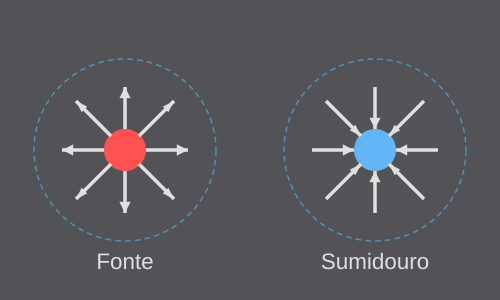
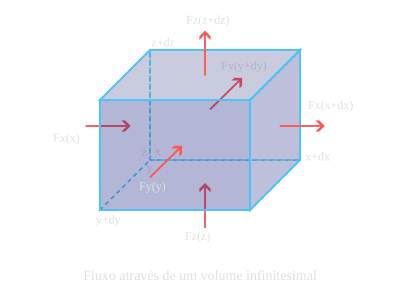
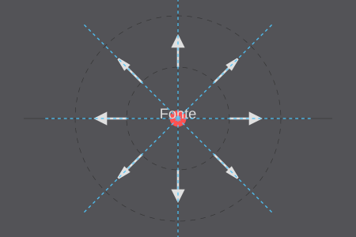
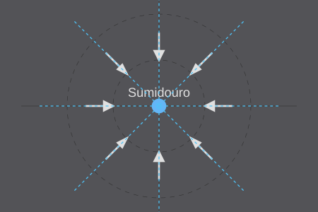
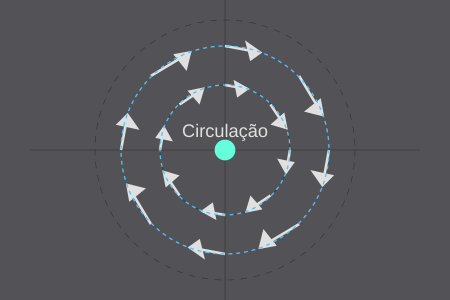
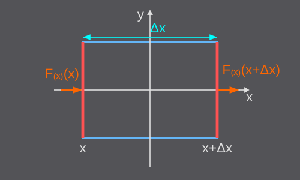

O divergente de um campo vetorial tridimensional \(\vec{F} = (F_x, F_y, F_z)\) é definido como:
$$\nabla \cdot \vec{F} = \frac{\partial F_x}{\partial x} + \frac{\partial F_y}{\partial y} + \frac{\partial F_z}{\partial z}$$
Onde \(\nabla\) (nabla) é o operador diferencial vetorial:
$$\nabla = \left(\frac{\partial}{\partial x}, \frac{\partial}{\partial y}, \frac{\partial}{\partial z}\right)$$
O divergente mede o quanto um campo vetorial se comporta como fonte ou sumidouro em um ponto específico.

Imagine o campo vetorial como o fluxo de um fluido:
Considere um pequeno cubo ao redor de um ponto:

O divergente mede a taxa líquida de fluxo saindo das faces do cubo, quando seu volume tende a zero.
Um campo vetorial radial para fora: \(\vec{F}(x,y,z) = (x, y, z)\)

Divergente: \(\nabla \cdot \vec{F} = 3\) (constante positiva)
As linhas de campo se afastam do ponto central - comportamento de fonte.
Um campo vetorial radial para dentro: \(\vec{F}(x,y,z) = (-x, -y, -z)\)

Divergente: \(\nabla \cdot \vec{F} = -3\) (constante negativa)
As linhas de campo convergem para o ponto central - comportamento de sumidouro.
Um campo de rotação: \(\vec{F}(x,y,z) = (-y, x, 0)\)

Divergente: \(\nabla \cdot \vec{F} = 0\)
O fluxo circula em torno da origem - não há criação nem destruição de fluxo.
Considere a componente-x do campo atuando nas faces perpendiculares ao eixo-x:

A diferença entre o valor de \(F_x\) nas faces é aproximadamente \(\frac{\partial F_x}{\partial x} \Delta x\)
A taxa líquida de fluxo por unidade de volume é:
$$\nabla \cdot \vec{F} = \lim_{\Delta V \to 0} \frac{\text{Fluxo Líquido}}{\Delta V}$$
Que resulta exatamente na soma das derivadas parciais:
$$\nabla \cdot \vec{F} = \frac{\partial F_x}{\partial x} + \frac{\partial F_y}{\partial y} + \frac{\partial F_z}{\partial z}$$
O Teorema da Divergência (Gauss) relaciona o divergente de um campo vetorial em um volume com o fluxo através da superfície que o envolve:
$$\iiint_V (\nabla \cdot \vec{F}) \, dV = \iint_S \vec{F} \cdot \vec{n} \, dS$$
Esta relação é fundamental na eletrostática, magnetismo e dinâmica de fluidos - áreas críticas para o desenvolvimento aeroespacial durante a Guerra Fria.
Este assunto será abordado com detalhes no futuro!
Calcule o divergente do campo gravitacional:
$$\vec{g}(x,y,z) = -G\frac{M}{r^3} \vec{r}$$
Onde \(\vec{r} = (x, y, z)\) e \(r = \sqrt{x^2 + y^2 + z^2}\).
Dica: Para pontos fora da massa \(M\), qual o valor esperado para o divergente?
Para o campo gravitacional:
$$\vec{g}(x,y,z) = -G\frac{M}{r^3} \vec{r} = -G\frac{M}{r^3} (x, y, z)$$
Calculando o divergente para \(r \neq 0\) (fora da massa):
$$\nabla \cdot \vec{g} = 0$$
O divergente do campo gravitacional é zero no espaço vazio - um resultado importante da Lei da Gravitação de Newton!
Considere o campo $\vec{F}(x,y) = (2x, 3y).$ Passo a passo:
Dica: Visualize linhas de fluxo desse campo e identifique se há alguma "fonte" ou "sumidouro".
Seja o campo em 3D: $\vec{G}(x,y,z) = (xy,\; x^2 - y^2,\; z^3 + xy).$ Tarefa:
Para discussão em turma: Pense em como esse campo poderia representar um sistema fluido ou elétrico. Onde "acumula" e onde "espalha" fluxo?